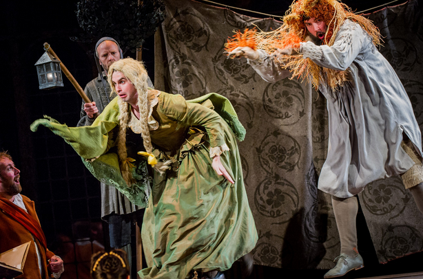

Prologue
Gentles, perchance you wonder at this show;
But wonder on, till truth make all things plain.
This man is Pyramus, if you would know;
This beauteous lady Thisby is certain.
This man, with lime and rough-cast, doth present
Wall, that vile Wall which did these lovers sunder;
And through Wall's chink, poor souls, they are content
To whisper. At the which let no man wonder.
This man, with lanthorn, dog, and bush of thorn,
Presenteth Moonshine; for, if you will know,
By moonshine did these lovers think no scorn
To meet at Ninus' tomb, there, there to woo.
This grisly beast, which Lion hight by name,
The trusty Thisby, coming first by night,
Did scare away, or rather did affright;
And, as she fled, her mantle she did fall,
Which Lion vile with bloody mouth did stain.
Anon comes Pyramus, sweet youth and tall,
And finds his trusty Thisby's mantle slain:
Whereat, with blade, with bloody blameful blade,
He bravely broach'd is boiling bloody breast;
And Thisby, tarrying in mulberry shade,
His dagger drew, and died. For all the rest,
Let Lion, Moonshine, Wall, and lovers twain
At large discourse, while here they do remain.
Exeunt Prologue, Thisbe, Lion, and Moonshine
THESEUS
I wonder if the lion be to speak.
DEMETRIUS
No wonder, my lord: one lion may, when many asses do.
Wall
In this same interlude it doth befall
That I, one Snout by name, present a wall;
And such a wall, as I would have you think,
That had in it a crannied hole or chink,
Through which the lovers, Pyramus and Thisby,
Did whisper often very secretly.
This loam, this rough-cast and this stone doth show
That I am that same wall; the truth is so:
And this the cranny is, right and sinister,
Through which the fearful lovers are to whisper.
THESEUS
Would you desire lime and hair to speak better?
DEMETRIUS
It is the wittiest partition that ever I heard
discourse, my lord.
Enter Pyramus
THESEUS
Pyramus draws near the wall:
Silence!
Pyramus
O grim-look'd night! O night with hue so black!
O night, which ever art when day is not!
O night, O night! alack, alack, alack,
I fear my Thisby's promise is forgot!
And thou, O wall, O sweet, O lovely wall,
That stand'st between her father's ground and mine!
Thou wall, O wall, O sweet and lovely wall,
Show me thy chink, to blink through with mine eyne!
Wall holds up his fingers
More MSM photos from Glyndebourne 2016 at Schmopera